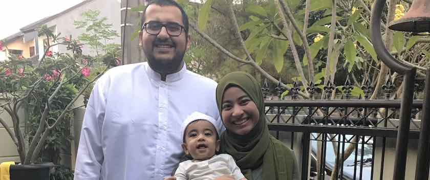

About Me
Download Curriculum Vitae
My name is Muhammad Arif and I'm from Indonesia. Currently I'm residing in Rockville, MD, USA, together with my small family (photo above :D).
Current Work
I'm a postdoctoral visiting fellow at The National Institutes of Health (NIH), specifically The National Institute on Alcohol Abuse and Alcoholism (NIAAA). I'm jointly appointed by the Laboratory of Cardiovascular Physiology and Tissue Injury (LCPTI), and the Section on Fibrotic Disorders (SFD).
I'm working with experts in lung-, heart-, and liver-related diseases that develop pre-clinical models to understand disease mechanisms and find new novel therapy targets. I'm bringing new perspectives to both groups with my systems and network biology expertise to improve the quality and accelerate the research. Currently, I'm working on in multiple projects, including development disease models with multi-omics and multi-tissue data. Very very very exciting projects!
Research Interests and Experiences
My interests are in the development and implementation of machine learning and network analysis methods in biological context. I have been involved in multiple projects including multi-omics integration, biological network (co-expression and regulatory network), single-cell transcriptional analysis, metabolic modelling and proteomics analysis. Some of my notable works can be found in the Publication tab, including integration of multi-omics data, multi-tissue analysis on heart attack, biological network database, and my PhD Thesis.
On top of research activity, I'm very interested as well in teaching (both introductory and advanced level) and doing outreach programs. If you have any collaboration for research or teaching, or even side projects, please drop me a message.
PhD Education
I'm a PhD graduate from KTH Royal Institute of Technology and also Science for Life Laboratory (SciLifeLab) under the supervision of Professor Adil Mardinoglu and Professor Mathias Uhlén.
I'm part of Systems Medicine group at SciLifeLab. I succesfully defended my PhD on 11 June 2021. My PhD project was focusing on the use of systems biology to understand the underlying mechanism of human diseases.